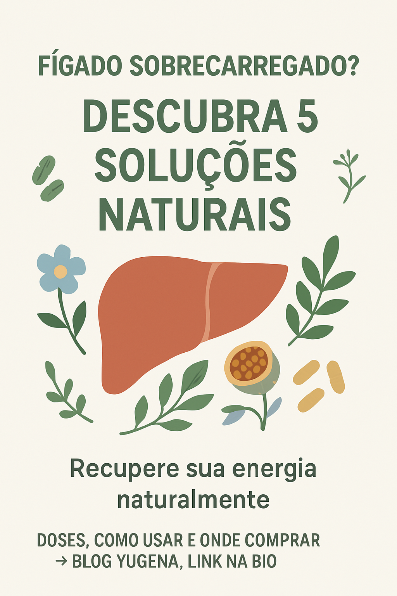

Descubra os suplementos cientificamente comprovados que podem regenerar seu fígado e restaurar sua vitalidade

Você sente cansaço constante, inchaço abdominal ou dificuldade para digerir alimentos gordurosos? Estes podem ser sinais de que seu fígado está sobrecarregado e precisa de apoio para realizar suas funções de desintoxicação adequadamente.
O fígado é responsável por mais de 500 funções vitais no organismo, incluindo a metabolização de toxinas, produção de bile e regulação do metabolismo. Quando este órgão está comprometido, todo o corpo sofre as consequências, resultando em fadiga, problemas digestivos e redução da qualidade de vida.
Felizmente, a natureza oferece soluções eficazes. Neste artigo, você descobrirá 5 suplementos naturais cientificamente comprovados que podem ajudar a desintoxicar seu fígado e restaurar sua energia. Confira nossa tabela comparativa completa com doses, benefícios e onde adquirir cada produto com segurança.
| Suplemento | Onde Comprar | Dose Recomendada | Benefício Principal | Forma Disponível |
|---|---|---|---|---|
| Cardo Mariano Silybum marianum |
Mercado Livre | 200-600mg/dia | Regeneração celular hepática | Cápsulas, Chá, Extrato |
| Alcachofra Cynara scolymus |
Amazon Mercado Livre |
300-600mg/dia | Estimula produção de bile | Cápsulas, Chá, Extrato |
| Dente-de-leão Taraxacum officinale |
Mercado Livre | 1-3g/dia (raiz) | Desintoxicação e diurese | Chá, Cápsulas, Tintura |
| N-acetilcisteína (NAC) |
Amazon Mercado Livre |
600-1200mg/dia | Precursor da glutationa | Cápsulas, Comprimidos |
| Schisandra Schisandra chinensis |
Mercado Livre | 100-300mg/dia | Adaptógeno hepatoprotetor | Cápsulas, Chá, Tintura |
O cardo-mariano é uma planta medicinal da espécie Silybum marianum, considerada o "padrão-ouro" para a proteção hepática. Rico em silimarina, um complexo de flavonoides que inclui silibina, isosilibina, silicristina e silidianina, este suplemento possui propriedades anti-inflamatórias, antioxidantes e hepatoprotetoras comprovadas cientificamente.
O cardo mariano atua diretamente na regeneração das células hepáticas, oferecendo proteção contra toxinas ambientais, medicamentos hepatotóxicos e danos causados pelo álcool. Seus benefícios incluem a estabilização das membranas celulares, aumento da síntese proteica nos hepatócitos e estimulação da regeneração do tecido hepático. Estudos demonstram sua eficácia no tratamento de esteatose hepática, hepatite e cirrose em estágios iniciais.
Cápsulas: 200-600mg de extrato padronizado (70-80% silimarina), 2-3 vezes ao dia
Chá: 3-5g dos frutos secos por xícara, até 3 vezes ao dia
Extrato líquido: 2-4ml, 3 vezes ao dia
A dose sugerida representa uma média segura para a maioria das pessoas, mas não é universal. Ajustes individuais devem ser feitos com orientação profissional.
O cardo mariano está disponível em múltiplas apresentações: cápsulas de extrato padronizado (mais concentrado), comprimidos, chá preparado com os frutos secos, extrato líquido e tinturas. As cápsulas oferecem maior praticidade e concentração de princípios ativos, enquanto o chá proporciona uma abordagem mais tradicional e suave.
O cardo mariano potencializa seus efeitos quando combinado com alcachofra (melhora do fluxo biliar), dente-de-leão (ação diurética complementar) e NAC (dupla proteção antioxidante). Essa sinergia é frequentemente encontrada em formulações comerciais específicas para saúde hepática.
Contraindicações: Gravidez, amamentação, alergia a plantas da família Asteraceae (margarida, crisântemo), obstrução das vias biliares.
Efeitos colaterais: Raramente pode causar desconforto gastrointestinal, diarreia leve ou reações alérgicas cutâneas.
Interações: Pode potencializar medicamentos metabolizados pelo fígado. Consulte seu médico se estiver em tratamento medicamentoso.
A alcachofra (Cynara scolymus) é reconhecida pela medicina como um dos melhores protetores hepáticos naturais. Suas folhas contêm cinarina e ácido cafeico, compostos bioativos responsáveis por estimular a função hepática e biliar. Rica em antioxidantes como flavonoides e ácidos fenólicos, a alcachofra oferece proteção celular e melhoria da digestão de gorduras.
A alcachofra estimula significativamente a produção e o fluxo de bile, facilitando a digestão de gorduras e a eliminação de toxinas. Seus efeitos incluem redução do colesterol LDL, prevenção da esteatose hepática, melhoria da função digestiva e proteção contra danos oxidativos. Estudos clínicos demonstram sua eficácia na redução de sintomas como inchaço abdominal, má digestão e desconforto pós-prandial.
Extrato seco: 300-600mg, 2-3 vezes ao dia antes das refeições
Chá: 1-2 colheres de sopa de folhas secas por xícara, 2-3 vezes ao dia
Extrato líquido: 2-4ml, 3 vezes ao dia
A dose sugerida representa uma média segura para a maioria das pessoas, mas não é universal. Ajustes individuais devem ser feitos com orientação profissional.
Disponível em cápsulas de extrato seco padronizado, comprimidos, chá de folhas secas, extrato líquido e como alimento in natura. As cápsulas oferecem concentração padronizada de princípios ativos, enquanto o consumo como alimento proporciona fibras e nutrientes adicionais.
A alcachofra combina excelentemente com cardo mariano para proteção hepática completa, com boldo para potencializar a ação colerética, e com dente-de-leão para otimizar a eliminação de toxinas. Essa combinação é especialmente eficaz em protocolos de desintoxicação hepática.
Contraindicações: Obstrução das vias biliares, cálculos biliares grandes, alergia a plantas da família Asteraceae.
Efeitos colaterais: Pode causar gases, alterações intestinais ou reações alérgicas em pessoas sensíveis.
Interações: Pode potencializar medicamentos anticoagulantes. Monitoramento médico é recomendado.
O dente-de-leão (Taraxacum officinale) é uma planta medicinal rica em vitaminas A, C, K, minerais como potássio e ferro, além de compostos bioativos como taraxacina, inulina e sesquiterpenos. Conhecido por suas propriedades depurativas e diuréticas, atua como um "detox natural" para o fígado e rins, promovendo a eliminação de toxinas e o equilíbrio hídrico.
O dente-de-leão oferece proteção hepática através de múltiplos mecanismos: redução da inflamação, proteção contra danos oxidativos, estímulo da regeneração celular e melhoria do fluxo biliar. Seus benefícios incluem redução da gordura hepática, melhoria da digestão, ação diurética natural, controle glicêmico e propriedades prebióticas que favorecem a saúde intestinal. Estudos indicam eficácia no tratamento de hepatite e fibrose hepática.
Chá (raiz): 1-2 colheres de chá de raiz seca por xícara, até 3 vezes ao dia
Cápsulas: 500-1000mg de extrato seco, 2-3 vezes ao dia
Tintura: 2-5ml, 3 vezes ao dia
Suco fresco: Folhas jovens com água de coco, 3 vezes ao dia
A dose sugerida representa uma média segura para a maioria das pessoas, mas não é universal. Ajustes individuais devem ser feitos com orientação profissional.
O dente-de-leão pode ser consumido como chá (raiz ou folhas secas), cápsulas de extrato padronizado, tintura, suco fresco das folhas ou como alimento (folhas jovens em saladas). Cada forma oferece diferentes concentrações de princípios ativos e velocidades de absorção.
Combina efetivamente com cardo mariano para proteção hepática abrangente, com alcachofra para otimizar a função biliar, e com NAC para potencializar a desintoxicação. A combinação com gengibre e hortelã melhora o sabor e adiciona propriedades digestivas.
Contraindicações: Obstrução dos ductos biliares, úlcera péptica ativa, hipersensibilidade à planta, insuficiência renal grave.
Efeitos colaterais: Pode causar desconforto gástrico, diarreia ou reações alérgicas. O sabor amargo pode ser desagradável.
Interações: Pode potencializar medicamentos diuréticos e hipoglicemiantes. Monitoramento médico é recomendado.
A N-acetilcisteína (NAC) é um aminoácido modificado que atua como precursor direto da glutationa, o antioxidante mais importante do organismo. Amplamente utilizada na medicina para tratar intoxicações, especialmente por paracetamol, a NAC oferece proteção hepática através da restauração dos níveis de glutationa e neutralização de radicais livres.
A NAC protege o fígado contra uma ampla gama de toxinas, incluindo álcool, medicamentos, poluentes ambientais e metais pesados. Seus benefícios incluem regeneração celular hepática, redução da inflamação, melhoria da função desintoxicante, proteção contra esteatose hepática e suporte à função respiratória através de suas propriedades mucolíticas. Estudos demonstram eficácia na prevenção e tratamento de danos hepáticos induzidos por medicamentos.
Uso geral: 600-1200mg por dia, dividido em 2-3 doses
Proteção hepática: 600mg, 2 vezes ao dia
Suporte respiratório: 600mg, 2-3 vezes ao dia
Administração: Preferencialmente com estômago vazio, 1 hora antes ou 2 horas após as refeições
A dose sugerida representa uma média segura para a maioria das pessoas, mas não é universal. Ajustes individuais devem ser feitos com orientação profissional.
Disponível em cápsulas, comprimidos efervescentes, pó para dissolução e solução injetável (uso hospitalar). Os comprimidos efervescentes oferecem melhor absorção, enquanto as cápsulas proporcionam maior praticidade. O característico odor de enxofre é normal e indica a presença do princípio ativo.
A NAC potencializa seus efeitos quando combinada com vitamina C (ação antioxidante sinérgica), vitamina E (proteção de membranas celulares), selênio e molibdênio (cofatores enzimáticos), e cardo mariano (dupla proteção hepática). Essa combinação é especialmente eficaz em protocolos de desintoxicação intensiva.
Contraindicações: Alergia à cisteína, úlcera péptica ativa, asma grave não controlada.
Efeitos colaterais: Náuseas, vômitos, diarreia (especialmente se tomado com alimentos), odor característico de enxofre.
Interações: Pode potencializar medicamentos vasodilatadores e anticoagulantes. Reduzir dose em insuficiência renal.
A Schisandra chinensis, conhecida como "Wu Wei Zi" (semente dos cinco sabores), é um adaptógeno tradicional da medicina chinesa que combina propriedades hepatoprotetoras, neuroprotoras e imunomoduladoras. Rica em lignanos, especialmente schisandrina A, B e C, oferece proteção celular abrangente e melhoria da resistência ao estresse físico e mental.
A Schisandra protege o fígado através da ativação de enzimas antioxidantes, estimulação da regeneração celular e proteção contra hepatotoxinas. Seus benefícios incluem melhoria da função hepática, aumento da energia e resistência física, proteção cognitiva, melhoria da qualidade do sono, suporte ao sistema imunológico e propriedades anti-envelhecimento. Estudos demonstram eficácia na proteção contra hepatites virais e danos induzidos pelo álcool.
Extrato padronizado: 100-300mg, 2 vezes ao dia
Chá (bagas secas): 1-2 colheres de chá por xícara, 2-3 vezes ao dia
Tintura: 2-4ml, 3 vezes ao dia
Pó: 1-3g por dia, dividido em doses
A dose sugerida representa uma média segura para a maioria das pessoas, mas não é universal. Ajustes individuais devem ser feitos com orientação profissional.
Disponível em cápsulas de extrato padronizado, bagas secas para chá, tintura, pó e comprimidos. As cápsulas oferecem concentração padronizada de lignanos, enquanto as bagas secas proporcionam a experiência tradicional dos "cinco sabores" característicos da planta.
A Schisandra combina excelentemente com ginseng para potencializar efeitos adaptogênicos, com rhodiola para otimizar a resistência ao estresse, com cardo mariano para proteção hepática completa, e com ginkgo biloba para melhoria cognitiva. Essa sinergia é especialmente valiosa em protocolos de longevidade e performance.
Contraindicações: Gravidez, amamentação, hipertensão não controlada, infecções agudas com febre alta.
Efeitos colaterais: Pode causar insônia se tomado à noite, desconforto gastrointestinal, reações alérgicas raras.
Interações: Pode potencializar medicamentos sedativos e para hipertensão. Evitar uso concomitante com estimulantes.
A desintoxicação hepática não é apenas uma tendência wellness, mas uma necessidade real em nosso mundo moderno repleto de toxinas ambientais, medicamentos e estresse oxidativo. Os cinco suplementos apresentados neste artigo representam séculos de uso tradicional validado pela ciência moderna.
Cada suplemento oferece mecanismos únicos de proteção: o cardo mariano regenera células, a alcachofra otimiza a bile, o dente-de-leão promove eliminação, a NAC restaura antioxidantes e a schisandra fortalece a resistência geral. Juntos, eles formam um protocolo abrangente de saúde hepática.
Lembre-se: a suplementação deve sempre ser acompanhada de hábitos saudáveis como alimentação equilibrada, hidratação adequada, exercícios regulares e redução da exposição a toxinas. Consulte sempre um profissional de saúde antes de iniciar qualquer protocolo de suplementação.